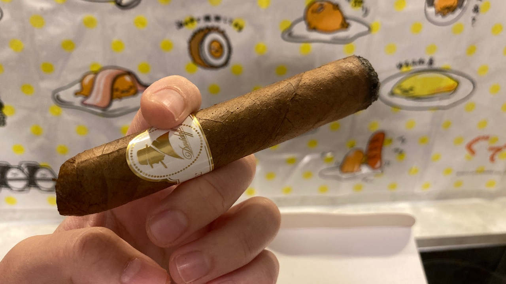
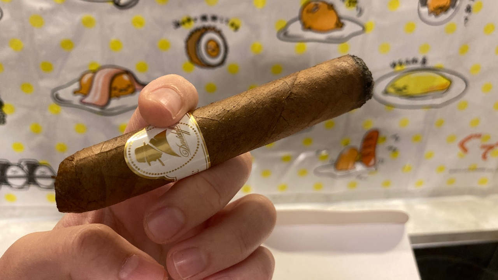
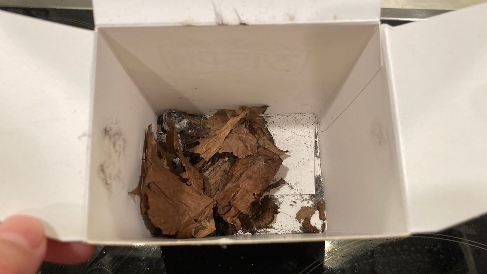

Cigar Log: Davidoff Winston Churchill Belicoso (4)
Hope everyone's holiday has been going well! I did not think that I would have a chance to enjoy a cigar before 2023 ends since it's been so cold, but here we are.
Today I'm enjoy my last stick of Davidoff Winston Churchill Belicoso. It's been a few months since I last picked up a cigar. I went with straight cut at an angle for this one. I think I might have chopped too much off. 😅

It started out with a very reminiscing scent. It's that creamy Davidoff taste as every other ones that I had previously. Ah~ I almost forgot how nice it feels to have a cigar in hand. 🥰
 

However, very similar to every other Davidoff belicoso, that lovely taste is pretty much gone right after like 5 puffs. By the time it even reaches 1/5th of the cigar, the flavour was pretty much gone.
It could be due to a few factors though. One, I could've been overheating the cigar. I definitely wasn't being patient with this one because I just missed cigar so much. But, two, the cigar might have been too moist.
The wrapper leaf looks a bit thick while it was burning. I'm using Boveda 69% for my humidor (or just cigar storage). I didn't leave it out to dry so that could have been the reason. Anyhow, it still had a little bit of that Davidoff taste, but mostly just sour after reaching about end of first third.
Moving on to the second third, well, I definitely overheated it because it just turned a bit sour and bitter for me. I did chop the head of the cigar further to remove the black ash and was able to enjoy it further. It was a good relaxing thinking session.
Now I ended the cigar early at the end of second third. It was producing a ton of smoke output and I do find looking at the smoke relaxing. Having that said, the flavours that I like were gone and I don't like the bitter end. Hence it's ended early.

Smoke time was about 20 minutes for me. Again, I ended this one early so it could have probably lasted a bit longer. But anyways, it was a good session. This will be the last post for this year. I will see you all in 2024! Thanks for reading and enjoy your day ❤
